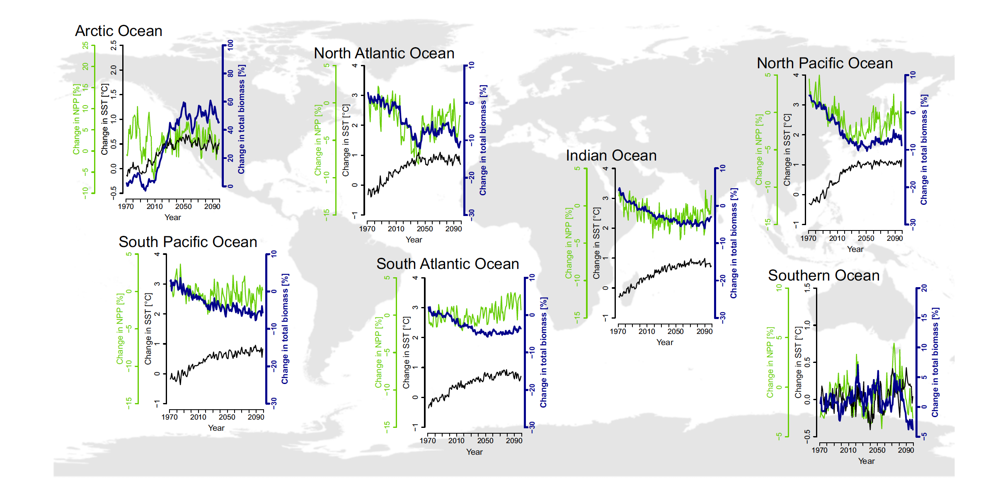

1 Introduction
En las últimas décadas, las evidencias de los cambios en variables climáticas y oceanográficas están demostradas con profusa evidencia científica las cuales han sido bien compiladas por el Panel Intergubernamental sobre Cambio Climático (IPCC por sus siglas en inglés) (IPCC, 2014). El impacto de estos cambios se ha traducido en perturbaciones en estructura y funcionamiento de los ecosistemas y han sido asociados a la acción antropogénica (Marshall et al., 2018) (Worm et al., 2012) y relativos al Cambio Climático (CC) global (Bryndum-Buchholz et al., 2019; Rijnsdorp et al., 2009) (Arana et al., 2020; Arcos et al., 2004; Worm et al., 2012)
Un forzante (o driver) se define como cualquier factor natural o antropogénico que causa cambios directos o indirectos en un ecosistema. Un forzante directo tiene influencia inéquivoca sobre los procesos ecosistémicos, por otro lado, un forzante indirecto opera de forma difusa, por alteración de uno o mas forzantes. En las poblaciones marinas, los forzantes directos tienen impacto sobre la fisiología y aspectos fenológicos, y los forzantes indirectos tienen impacto sobre la productividad primaria o interacciones ecológicas, distribución espacial o transporte larval (Koenigstein et al., 2016).
En todos los océanos del mundo, las poblaciones marinas están evidenciando los efectos del CC, ya sea por la suma y/o combinación de los forzantes del CC, y sobre lo cual existe sólida evidencia científica que demuestra los efectos en respuestas como fisiología, ecología y variables observables como distribución, biomasas y productividad en escalas locales y globales (Barange et al., 2014; Bryndum-Buchholz et al., 2019; Perry et al., 2005; Rijnsdorp et al., 2009). Estas nuevas condiciones externas están produciendo impactos en los ecosistemas marinos a través de cambios en los hábitats (Bryndum-Buchholz et al., 2019; M. Hidalgo et al., 2018; Rijnsdorp et al., 2009; Shoji et al., 2011), lo cual tiene efectos en la sustentabilidad de las poblaciones y a su vez, en los sistemas socio-ecológicos asociados.
Existen múltiples evidencias que demuestran y cuantifican el impacto del CC en distintos grupos de especies marinas, ya sean estas; mamíferos, peces, moluscos y diversos organismos que constituyen comunidades ecológicas en distintos ecosistemas del planeta. Algunos autores proponen que los impactos del CC, a través de un calentamiento de las masas de agua, gatillaría cambios en los patrones de distribución espacial de los organismos marinos haciéndolos migrar hacia altas latitudes (Cheung et al., 2010; Kortsch et al., 2015; Melbourne-Thomas et al., 2021). En este sentido, es necesario entender cómo impactarán estos forzantes ambientales en ecosistemas de altas latitudes como, por ejemplo, el Oceano Austral (OA), y por ende, cómo responderán las especies marinas que allí habitan. En ese sentido, regiones polares deben ser analizadas a la luz de la evidencia científica, identificando los cambios ocurridos, así como también, proyectar los impactos del CC en estas poblaciones.
El Océano Austral que rodea la Antártica, es un componente crítico del sistema terrestre, y sustenta un ecosistema marino de inmenso valor ecológico, económico e intrínseco. Este océano está definido espacialmente en función de la Corriente Circumpolar Antártica, la que más agua transporta en todo el océano. Esta corriente formada hace 34 millones de años fluye casi libremente de oeste a este alrededor del continente Antártico, en una banda fluctuante que se ubica aproximadamente en los 60º de latitud sur. En este punto el agua es más fría y menos salada que en los océanos colindantes. Por todas estas caracteristicas, este océano es una de los áreas más sensibles al CC. Los forzantes claves y su influencia en procesos claves dentro del OA ya han experimentado cambios en sus atributos, entre ellos se pueden identificar; la temperatura del océano, la dinámica del hielo marino, la estratificación, las corrientes, entre otros (Morley et al., 2020; Sylvester et al., 2021).
En el OA habitan especies que conforman las mas grandes poblaciones marinas del planeta, entre ellas el krill Euphausia superba y peces demersales como el bacalao antártico Dissostichus mawsoni (Atkinson et al., 2009; Piñones & Fedorov, 2016; Veytia et al., 2020). Estas dos especies son esenciales en el Océano Austral, dado que forman parte estructural de la red trófica y ecológica (Atkinson et al., 2009; Piñones & Fedorov, 2016). Por otro lado, estas poblaciones son explotadas intensamente por la industria pesquera desde hace más de 50 años, constituyendo una actividad económica muy importante. En este sentido, cualquier impacto que tengan los distintos forzantes ambientales sobre la productividad de estas especies marinas concita múltiples intereses, que van desde lo científico hasta lo económico.
Entender entonces cuales son y como actuan los principales forzantes y su impacto en los procesos poblacionales de las especies mas importantes que habitan el OA y como estas especies responderán a esta influencia es fundamental para comprender y anticiparse a algun escenario climático. El objetivo por tanto es identificar la influencia del CC a través de los forzantes ambientales en las poblaciones marinas más importantes del Océano Austral.
1.1 Desarrollo
Cualquier percepción de un ambiente marino sin cambios es hoy en día una afirmación ingenua y sesgada. Esta mirada se contradice fácilmente observando las dramáticas evidencias de cambios en la estructura, abundancia y distribución de las especies a través de la escala temporal desde años, décadas, siglos y milenios (Pinsky et al., 2020). En este sentido, es importante determinar qué forzantes ambientales están produciendo los cambios a nivel poblacional. Este tipo de estudios han sido abundantes en este último tiempo dada la importancia del OA y las poblaciones que allí habitan en un contexto de CC acelerado.
(Morley et al., 2020) han clasificado los forzantes mas importantes y con mayor influencia en el OA, los cuales se clasifican como forzantes físicos, antropogénicos y biológicos. Entre los forzantes físicos, se pueden identificar el calentamiento global, procesos atmosférico-oceanográficos y corrientes marinas.
Respecto a los forzantes asociados al calentamiento global que tienen impacto en las poblaciones marinas, los factores con más evidencias son la temperatura y el oxígeno disuelto. Estos dos forzantes son los principales responsables de control del metabolismo aeróbico de organismos ectotermos como peces y crustáceos, y son también los dos variables ambientales influenciadas de manera más generalizada por cambio climático de origen antropogénico (Duncan et al., 2020).
1.1.1 Temperatura
La temperatura regula la tasa de metabolismo aeróbico a través del consumo de energía para procesos fisiológicos, proceso acelerado cuando el organismo está sometido a altas temperaturas. En este sentido, cabe señalar que el océano se ha calentado sin cesar desde 2005, mostrando claras tendencias bien documentadas en el 5to Reporte de Evaluación del IPCC (IPCC, 2014). La tendencia de calentamiento se ve confirmada por las mediciones de la temperatura del océano durante la última década. Las profundidades de 0-700 m. y 700-2000 m. del océano se han calentado a tasas de 5,31 ± 0,48 y 4,02 ± 0,97 gº año-1 de 2005 a 2017. La tendencia a largo plazo para profundidades de 0-700 m. y 700-2000 m. se han calentado 4,35 ± 0,8 y 2,25 ± 0,64 gº año-1 entre 1971-1990 y 1998-2017 respectivamente. Es probable que el calentamiento del océano haya continuado en el océano abisal y profundo por debajo de los 2000 m (hemisferio sur y océano austral) (Bindoff et al., 2019).
Con respecto a la temperatura y a sus variaciones futuras, (Bryndum-Buchholz et al., 2019) realizaron predicciones por medio de simulaciones de biomasas de peces en distintos océanos a través de modelos de ensamble, y se identificaron diferentes resultados frente a la misma variable ambiental, que en este caso fue la variabilidad de la Temperatura Superficial del Mar (TSM) (Figura 1).
Cabe destacar de acuerdo a este análisis, que en la gran mayoría de los océanos, la relación entre el aumento de TSM y cambios en biomasa fueron inversamente proporcionales, salvo para los océanos Austral y Ártico, en donde los cambios en la temperatura beneficiarían a las poblaciones marinas de aquellos ecosistemas. Estos resultados coinciden con lo propuesto por (Koenigstein et al., 2016), quienes apuntaban a beneficios en las poblaciones marinas de ecosistemas de altas latitudes por efecto del CC y el calentamiento global.

(Rijnsdorp et al., 2009) indican que la temperatura tiene un efecto directo sobre la fisiología, el crecimiento, la reproducción, el reclutamiento y el comportamiento de organismos poiquilotérmicos como los peces, moluscos, cefalópodos y crustáceos. También identifican que la temperatura tendrá un efecto sobre aspectos de la historia de vida y ontogenia de las especies, en donde, diferentes estadíos de un organismo (huevos, larvas, juveniles, adultos) pueden ser influidos por la temperatura de forma distinta (Figura 2).
De acuerdo también a estos resultados, es posible identificar un rango de tolerancia a la temperatura (nicho termal) muy estrecho en altas y bajas latitudes y con un amplio rango de tolerancia en latitudes intermedias (Figura 2.
El cambio de la temperatura del medio marino afecta a muchos procesos fisiológicos que van desde dañar las proteínas hasta alterar la función de los órganos. Los cambios ambientales, especialmente el calentamiento global, pueden por tanto influir fuertemente en la abundancia y distribución de los peces a través de umbrales fisiológicos específicos de especies de tolerancia a la temperatura, o mediante respuestas a cambios en otros niveles tróficos (Perry et al., 2005; Rijnsdorp et al., 2009; Saba et al., 2014). En este contexto, los cambios en el rango de distribución espacial de los organismos marinos se encuentran entre las consecuencias más perceptibles del cambio climático a escala mundial, con impactos potencialmente significativos en la pesca comercial (Barange et al., 2014; Perry et al., 2005), en las redes tróficas y el funcionamiento de los ecosistemas y sobre la biodiversidad en su conjunto (Pinsky et al., 2020).
Los organismos marinos responden al aumento de la temperatura del océano a través de cambios de distribución, con cambios regionales esperados hacia aguas más frías, más profundas, más marinas o polares, así como también en el rango global (Cheung et al., 2010; Frawley et al., 2019; Pinsky et al., 2020).
Las temperaturas locales en los ecosistemas marinos polares están aumentando dos veces más rápido que el promedio mundial (IPCC, 2014), lo que lleva a una borealización de las comunidades de animales del Ártico, con una disminución de la abundancia de especies con afinidad polar y abundancia creciente de especies boreales. Se espera que la abundancia general de especies en mares semicerrados (es decir, el mar Mediterráneo, el mar Báltico) y las cuencas oceánicas tropicales disminuya en el futuro (Cheung et al., 2013).
1.1.2 Oxígeno disuelto
Por su parte, la disponibilidad de oxígeno plantea un límite superior en el metabolismo aeróbico, en la cual un organismo puede consumir el oxígeno requerido para alimentar los procesos fisiológicos. Este se establece mediante tasas de difusión a través de un gradiente de presión desde medio ambiente (Duncan et al., 2020).
Recientemente se demostró que el tamaño del cuerpo de los peces puede reducirse debido al cambio climático, especialmente en respuesta al calentamiento, la reducción del oxígeno y la disponibilidad de recursos (Cheung et al., 2013). El IPCC proyecta que los océanos se volverán más cálidos y menos oxigenados (IPCC, 2014).
El cambio climático está disminuyendo las concentraciones de oxígeno en el mar abierto (Deutsch et al., 2015; Isensee et al., 2016). Los efectos combinados del cambio climático y exceso de nutrientes (nitrógeno y fósforo de fuentes como la escorrentía agrícola y los desechos humanos) están conduciendo a disminuciones de oxígeno en sistemas marinos costeros y mares semicerrados que están fuertemente influenciados por su línea divisoria de aguas en un contexto global y regional. Los modelos predicen que el contenido de oxígeno en los océanos continúan disminuyendo a medida que las temperaturas atmosféricas y oceánicas aumenta y aumenta el tamaño de la población humana (Isensee et al., 2016).
En este sentido, los impactos producidos por los cambios en las concentraciones del oxígeno disuelto en el mar se traducen en una modulación importante en las poblaciones marinas y su funcionamiento. La evidencia reciente sugiere que los efectos combinados del calentamiento y la pérdida de oxígeno juntos limitan las distribuciones geográficas de organismos ectotermos marinos (Deutsch et al., 2015; Isensee et al., 2016; Pörtner, 2001). Se necesita suficiente oxígeno para que un organismo pueda sobrevivir, alimentarse, defenderse, crecer y reproducirse. Con el calentamiento esperado para finales de siglo, las pérdidas de hábitat serán particularmente agudas en los límites hacia el ecuador (Deutsch et al., 2015). Estos resultados sugieren que es probable que los impactos sinérgicos tanto del oxígeno como del calentamiento, moldeen fuertemente las distribuciones de especies futuras, la biomasa, producción y función del ecosistema.
Los límites de los rangos de tolerancia térmica desde el ecuador, a menudo coinciden con los hábitats donde el suministro de oxígeno es de dos a cinco veces la demanda de oxígeno establecida por la tasa metabólica en reposo de una especie (Deutsch et al., 2015). Por otro lado, y de acuerdo a las proyecciones del IPCC, los océanos llegarán a tener aguas más tibias y menos oxígeno disuelto (IPCC, 2014), dado que las temperaturas más cálidas impulsan tasas metabólicas más altas, las que superan la disponibilidad de oxígeno. Un ejemplo de esto, fue identificado en el Mar Mediterráneo, en donde (Cheung et al., 2013) usaron un Modelo Envolvente de Bioclima Dinámico, el cual simuló cambios en la abundancia relativa y distribución espacial de poblaciones marinas en una grilla global, considerando aspectos ecofisiológicos, preferencias y tolerancias a condiciones ambientales y movimiento de individuos adultos. En este analisis se determinó que el peso promedio de los peces disminuyó entre un 4% a un 49% desde el 1970 al 2050 (Figura 3).
Sin embargo, estos estudios deben ser analizados en detalle, dado que proyectar escenarios futuros de oxígeno disuelto es una tarea arriesgada. No hay consenso sobre el volumen futuro de aguas con poco oxígeno en mar abierto debido a las grandes incertidumbres sobre los posibles efectos biogeoquímicos y la evolución de la dinámica de los océanos tropicales (IPCC, 2014).
1.1.3 SAM/ENSO
Existen forzantes globales que afectan al OA en el presente y también afectarán en el futuro. Forzantes atmosférico-oceanógraficos son los que se manifiestan por cambios producidos en la atmósfera y que tienen implicancias en el mar, como por ejemplo, el Southern Annular Mode (SAM) y El Niño Southern Oscillation (ENSO).
El agotamiento del ozono influye directamente en el modo principal de variabilidad de la circulación atmosférica en las regiones extratropicales del sur. Este fenómeno climático es llamado Modo Anular del SUR o Southern Annular Mode (SAM, por sus siglas en inglés). Una forma de medir el SAM es a través de un índice calculado como el gradiente de presión entre las latitudes medias y la Antártida, que cuando es muy positivo, da como resultado vientos del oeste que son más fuertes que el promedio y se desplazan hacia el polo. Desde 1957 ha habido un aumento significativo de la fase SAM positivo en el verano y otoño austral. Se cree que la tendencia del verano se debe principalmente al agotamiento del ozono polar estratosférico. La variabilidad del SAM tiene un impacto significativo en la temperatura de la superficie antártica, la precipitación y el hielo marino (Marshall et al., 2018).
(Saba et al., 2014) estudiarón los efectos del clima a gran escala y el forzamiento físico producido por distintas fases del SAM sobre los procesos biológicos en Península Antártica. En este estudio identificaron los impactos de las fases estacionales del SAM (SAM+ y SAM-) sobre la productividad de clorofila a (chl-a) y diatomeas y su correlación con la dinámica poblacional del krill, en la cual, demostraron que estas fases modifican la estructura poblacional en la dimensión batimetrica por efectos de estos cambios. La Figura 4 ilustra cómo el clima y los procesos oceanográficos físicos, individuales y combinados de invierno y primavera (ver los meses de julio a febrero en el eje x) caen en cascada desde el fitoplancton hasta el reclutamiento de krill en un SAM- en julio y primavera (panel izquierdo ) y un SAM+ en julio y primavera (panel derecho). Todas las demás propiedades (fitoplancton, krill y huevos de krill) están generalizadas para ilustración cualitativa (+ versus -) y no representan diferencias cuantitativas entre SAM negativa y positiva.
Otro fenómeno oceanográfico-atmosférico que también tiene implicancias en los océanos es la Oscilación del Sur El Niño, que en inglés es El Niño Southern Oscilation (ENSO, por sus siglas en inglés). Un evento “El Niño” consiste principalmente en un calentamiento por sobre lo normal de la superficie del Océano Pacífico ecuatorial central y oriental (mayor a 25ºC), acompañado por un aumento del nivel del mar (mayor a 15 cm.). Estos eventos que afectan a todo el Océano Pacífico, incluso llegando los efectos demostrados al Océano Austral, se presentan en forma cíclica pero a intervalos de tiempo irregulares que fluctúan entre períodos de dos y diez años. El fenómeno se inicia en el Océano Pacífico tropical, cerca de Australia e Indonesia, alterándose con ello la presión atmosférica en zonas muy distantes entre sí, hay cambios en la dirección y en la velocidad de los vientos, así como el desplazamiento de las zonas de lluvia a la región tropical. En condiciones normales, también llamadas condiciones No-Niño, los vientos alisios (que soplan de este a oeste) acumulan una gran cantidad de agua y calor en la parte occidental de este océano. El nivel superficial del mar es, en consecuencia, aproximadamente medio metro más alto en Indonesia que frente a las costas del Perú y Ecuador. Además, la diferencia en la temperatura superficial del mar es de alrededor de 8ºC. entre ambas zonas del Pacífico. Las temperaturas frías se presentan en América del Sur por que suben las aguas profundas y producen una agua rica en nutrientes que mantiene el ecosistema marino, y dentro de esto se sustentan las grandes pesquerías pelágicas (anchoveta y sardina). Las condiciones No-Niño América del Sur implica un clima atmosférico relativamente seco.
En cambio durante el fenómeno de El Niño los vientos alisios se debilitan o dejan de soplar, la máxima temperatura marina se desplaza hacia la Corriente de Perú que es relativamente fría y la mínima temperatura marina se desplaza hacia el Sureste Asiático. Esto provoca el aumento de la presión atmosférica en el sureste asiático y la disminución en América del Sur. Todo este cambio ocurre en un intervalo de seis meses, aproximadamente desde junio a noviembre.
Una abundante y bien documentada literatura apoya la tesis que las fluctuaciones en el ambiente marino por efecto de fenómenos climáticos como El Niño tienen un notable impacto en poblaciones marinas, en diferentes escalas de tiempo y espacio. Para evaluar los efectos de este fenómeno en las zona centro-sur de las costas de Chile, el trabajo de (Arcos et al., 2004), abordó los impactos en pesquerías pelágicas de la zona centro-sur de Chile, en donde se identificaron los cambios de la estructura de la población de jurel Trachurus symmetricus, haciendo colapsar a la industria pesquera, en lo que se conoce como la “Crisis del 97” (Arcos et al., 2004).
Uno de los principales efectos del fenómeno El Niño que esgrime el trabajo de (Arcos et al., 2004) es que la población juvenil del jurel “se acorraló” en el sector centro-sur (zona de intensa pesquería) por efecto de las malas condiciones de las aguas del norte (mas cálidas durante El Niño). Esto tuvo como consecuencia una explotación intensa de individuos de menos de 26 cm. (juveniles), con lo cual no se pudo regenerar el stock comercial los años posteriores disminuyendo los desembarques y provocando estragos por todos conocidos. La Figura 5 representa un modelo conceptual de las poblaciones de jurel bajo condiciones normales del océano (izquierda) y frente a una condición El Niño (derecha).
El CC ha generado desjustes temporales de fenómenos oceanográfico-atmosféricos que moldean a las poblaciones marinas en los océanos del hemisferio Sur, como son el ENSO y SAM (Lovenduski & Gruber, 2005; Morley et al., 2020; Saba et al., 2014). Si bien las poblaciones marinas han tratado de adaptarse y sincronizarse a estos fenómenos interdecadales, cualquier otro factor natural que esté en juego, como el calentamiento global, se traducirá en la pérdida de sincronía entre óptimos ambientales y productividad biológica de estas especies, causando drásticos cambios a nivel de fisiología, distribución y productividad. (Barange et al., 2014) identificaron cambios en el uso de hábitat de poblaciones de sardina y anchovetas en el Golfo de California y Perú, zonas afectadas por el ENSO. Estas especies alternan sincrónicamente en relación a sus biomasas, y desacoples producidos por el CC, ha generado pérdida de ajuste a las condiciones climáticas óptimas de sus poblaciones.
Si bien existe cierta alternancia y conexión entre estos dos fenómenos oceanográfico-atmosféricos, (Ehrnsten et al., 2019) plantea que es díficil testear el efecto de múltiples forzantes a través de un largo gradiente espacial con estudios empíricos. Sin empbargo, y a pesar de este problema logístico, la influencia de estos dos factores está ampliamente demostrada por la comunidad científica internacional.
1.1.4 Cambio Climático en poblaciones marinas del Océano Austral
Los cambios en la distribución de poblaciones marinas demuestran que el calentamiento global está direccionando a las poblaciones marinas hacia los polos (Parmesan & Yohe, 2003; Perry et al., 2005), lo cual pone el foco en los impactos del cambio climático en ecosistemas de altas latitudes y sus estructuras comunitarias y poblacionales.
Si bien este tipo de análisis se han realizado con énfasis en los océanos alrededor del mundo, aún persisten dudas sobre el efecto de los forzantes anteriormente descritos en poblaciones marinas en ecosistemas de altas latitudes, y más específicamente en el Océano Austral. Estas dudas han tratado de ser resueltas, y varios estudios han abordado esta problemática en especies antárticas y su correlación con forzantes climáticas y oceanográficas en este tipo de ambientes.
Las tendencias de la temperatura son muy variables en todo el continente antártico y su océano adyacente, y se ha producido un calentamiento rápido principalmente sobre la Península Antártica, que se destaca como una región clara y consistente de rápidos cambios, mientras que las condiciones han sido mucho más variables en otros sectores (Turner et al., 2005). En algunos casos los efectos del CC tienen un impacto que tiene una correlación positiva en el aumento de los indicadores. (Pinkerton et al., 2021) identificaron los impactos que tiene el cambio de las condiciones climáticas en los productores primarios (fitoplancton) en los últimos 20 años en el Océano Austral, identificando un incremento en la mayoría de biomasas de productires primarios en el OA. Este efecto positivo sobre estas variables se produciría por el aumento de nutrientes derivados de procesos como mezcla de la columna de agua, ingreso de polvo marino a capas subsuperficiales, y derretimiento del casquete de hielos.
El cambio climático está alterando rápidamente el hábitat del krill antártico Euphausia superba, al punto de diezmar sus poblaciones (Krüger et al., 2021). Esta especie constituye un factor clave de la red trófica del Océano Austral, al mismo tiempo que sostiene una pesca comercial de proporciones mundiales (Atkinson et al., 2009). El doble papel del cambio climático forzado y la variabilidad natural que afecta al hábitat del krill antártico y, por tanto, a la productividad de esta especie, complica la interacción de cualquier tendencia observada empirícamente y contribuyen a la incertidumbre en las proyecciones futuras para un manejo pesquero adecuado (Sylvester et al., 2021).
Las especies objetivo de las pesquerías antárticas actuales incluyen al bacalao y bacalao antártico Dissostichus eleginoides y D. mawsoni. Ambas especies son vulnerables a la sobrepesca debido al crecimiento lento, la madurez tardía y la fecundidad baja. Esta vulnerabilidad natural podría aumentar, ya que las comunidades que viven en el ecosistema antártico también se enfrentan actualmente a alteraciones de su entorno debido al cambio climático, como el aumento de la temperatura del agua y la disminución del hielo marino. Estos peces polares (Notothenioidei) están bien adaptados a las condiciones ambientales frías del Océano Austral, por lo que cualquier cambio en las condiciones del medio en que habitan, tednría drásticas consecuencias en sus niveles poblacionales (Mintenbeck, 2017). El CC no tiene un impacto uniforme alrededor de la Antártica, dado que en algunas áreas se prevén efectos negativos sobre las poblaciones de peces y la supervivencia, los hábitats e indirectamente sobre los ecosistemas (Vanderhaven, 2013). En este sentido, y de acuerdo a (M. Hidalgo et al., 2011), los efectos sinérgicos de la pesca, el clima y la dinámica interna de las fluctuaciones de la población son poco entendidos debido a la complejidad de estas interacciones, más aún en una condición de cambio.
1.1.5 Discusión
Como se expuso anteriormente, existe profusa evidencia científica que demuestra que los efectos del Cambio Climático en el océano tendrán impactos severos y alterarán la vida en los ecosistemas marinos. Es esencial entonces comprender cuales son los principales factores que inciden directamente en la estructura, distribución y variables como biomasa y/o abundancia de las poblaciones marinas alrededor del mundo, con énfasis en regiones y ecosistemas de altas latitudes como el Océano Austral.
El Océano Austral es un ecosistema moldeado por las condiciones extremas a las que está expuesto, y por ello, sus poblaciones se han adaptado fisiológicamente a estas condiciones. En un escenario de calentamiento global y variabilidad de condiciones oceanográficas, expone a estas especies a una vulnerabilidad frente a cambios mínimos de los forzantes analizados. De acuerdo a lo analizado, cabe destacar que no existen patrones generales, dado que cada población y cada ecosistema tiene particularidades que resultarían en variadas respuestas frente a un mismo forzante. Es por ello que la investigación científica tiene que hacer el esfuerzo de cubrir la mayor cantidad de especies, así como también, cada ecosistema para obtener respuestas verosímiles respecto a los efectos en las poblaciones marinas. De esta forma, la comprensión de los impactos del CC, así como también sus proyecciones podrían ser mejor entendidas y a su vez estar mejor preparados para el futuro.
Debemos considerar que el Océano Austral y alrededores es rico y productivo en vida marina, incluidas especies de moluscos, crustáceos y peces de interés para la industria pesquera (Arana et al., 2020), y actualmente son especies proclives a cambios en sus dinámicas poblacionales, y si bien, no es posible determinar si estos cambios del entorno tendrán efectos en la variabilidad poblacional, el manejo de estas pesquerías debe tener en cuenta los impactos directos sobre los peces que capturan. Se debería considerar también áreas específicas de vulnerabilidad de las especies y el ecosistema marino antártico. Un pequeño cambio de las condiciones climáticas podría causar un colapso poblacional en las especies explotadas o en alguna otra especie asociada en su red trófica y ecológica.
Como señalamos anteriormente, el krill y el bacalao son especies que habitan el OA y que constituyen importantes pesquerías explotadas por un conjunto de flotas de distintos paises. En este sentido, hay que entender y anticiparse a los impactos que tendrán los forzantes sobre estas poblaciones, y de esta forma ser precautorios y adaptativos en la extracción y explotación de recursos frente a esas nuevas condiciones climáticas. Esto puede significar que las cuotas se reduzcan, o que las asignaciones de captura espaciales y/o temporales sean más explícitas. Afortunadamente hoy existe un esfuerzo global con varios organismos e instituciones internacionales que además de cautelar la sustentabilidad de las pesquerías antes citadas, están haciendo esfuerzos de investigación tratando de entender los impactos del CC en este océano, entre ellas, el Comité Científico de Investigaciones Antárticas (SCAR), el Consejo de Administradores de Programas Antárticos Nacionales (COMNAP), Asociación Internacional de Operadores Turísticos Antárticos (IAATO) y Comisión para la Conservación de los Recursos Vivos Marinos Antárticos (CCAMLR). En este contexto, hoy se desarrollan programas científicos que intentan lidiar con este desafío del conocimiento, pero las herramientas analíticas y conceptuales aún tienen que mejorar, dado que se deben integrar los más variados componentes que influyen en el CC. Sin embargo, en aspectos relacionados al manejo y evaluación de estas poblaciones, las preguntas siguen abiertas y en continuo desarrollo científico tratando de proyectar los impactos que tiene en un contexto ecosistémico y de cambios climáticos fluctuantes, y cómo ello afecta a las poblaciones marinas del Océano Austral.
De acuerdo a esta revisión, existen forzantes directos e indirectos como la temperaratura, oxígeno y procesos oceanografico-atmosfericos como el SAM y ENSO que tienen impactos directas sobre las poblaciones marinas del Océano Austral. En este sentido, cambios en los niveles y tendencias de estos forzantes alterarán funciones tales como la distribución espacial, ecología y fisiología de las especies que habitan en el Océano Austral.